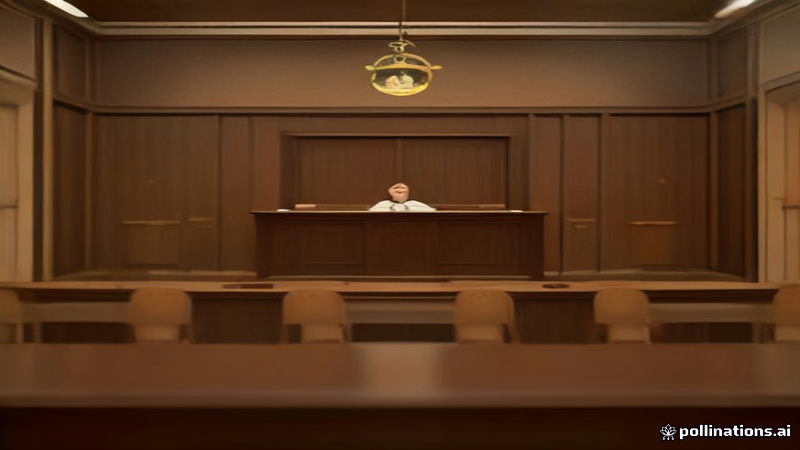

কমেডিয়ান রাসেল ব্র্যান্ডকে ১০.৫ বছর জেলে শাস্তি, ধর্ষণ ও যৌন হামলার দোষে
France 24, Al Jazeera English, DW · 2026-11-09
AI-generated illustrationএকটি যুক্তরাজ্য আদালত তাকে ২০০৪ থেকে ২০০৯ পর্যন্ত এক নারীকে ধর্ষণ এবং তিনজনকে যৌন হামলার দোষে দোষী সাব্যস্ত করে দশ বছরের বেশি কারাদণ্ড দিয়েছে।
একটি যুক্তরাজ্য আদালত সোমবার রাসেল ব্র্যান্ডকে ১০ বছর অর্ধেক কারাদণ্ড দিয়েছে, কারণ তিনি ২০০৪ থেকে ২০০৯ সালের মধ্যে এক নারীকে ধর্ষণ এবং তিনজনকে যৌন হামলার দোষে দোষী সাব্যস্ত হয়েছেন। এই দোষারোপ ফ্রান্স ২৪, আল জাজিরা ইংলিশ এবং ডব্লিউ ডি দ্বারা রিপোর্ট করা হয়েছে।
বিচারক ব্র্যান্ডকে যৌন শিকারী হিসেবে বর্ণনা করে বলেছেন, তিনি বিশ্বাস করতেন তার খ্যাতি তাকে সাধারণ মানুষের নিয়মের বাইরে কাজ করার অনুমতি দেয়, ফ্রান্স ২৪ অনুযায়ী।
Read the original reporting at the links above.
English version
Comedian Russell Brand sentenced to 10½ years for rape and sexual assault
A UK court handed former comedian Russell Brand a 10-and-a-half‑year prison term on Monday after he was found guilty of raping one woman and sexually assaulting three others between 2004 and 2009. The convictions were reported by France 24, Al Jazeera English and DW.
The presiding judge described Brand as a sexual predator, noting that he seemed to believe fame allowed him to act without regard for the rules that govern decent behaviour, according to France 24.